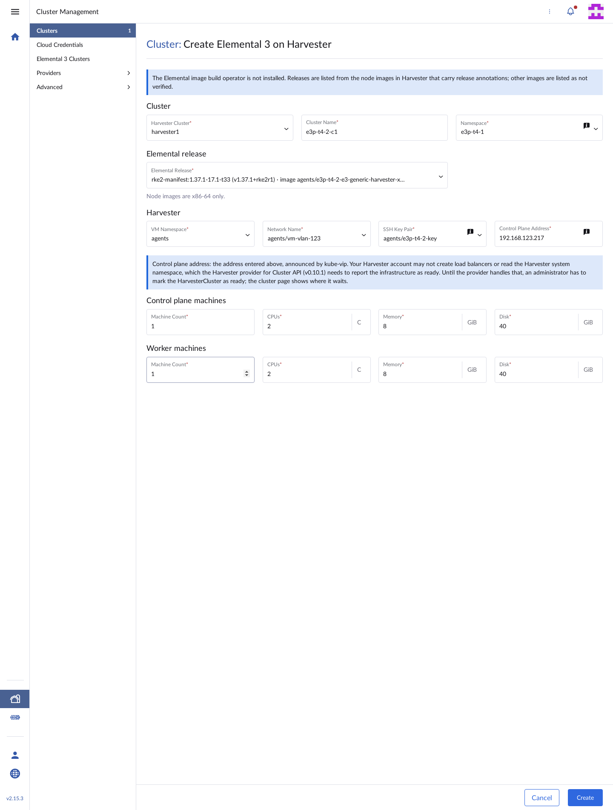
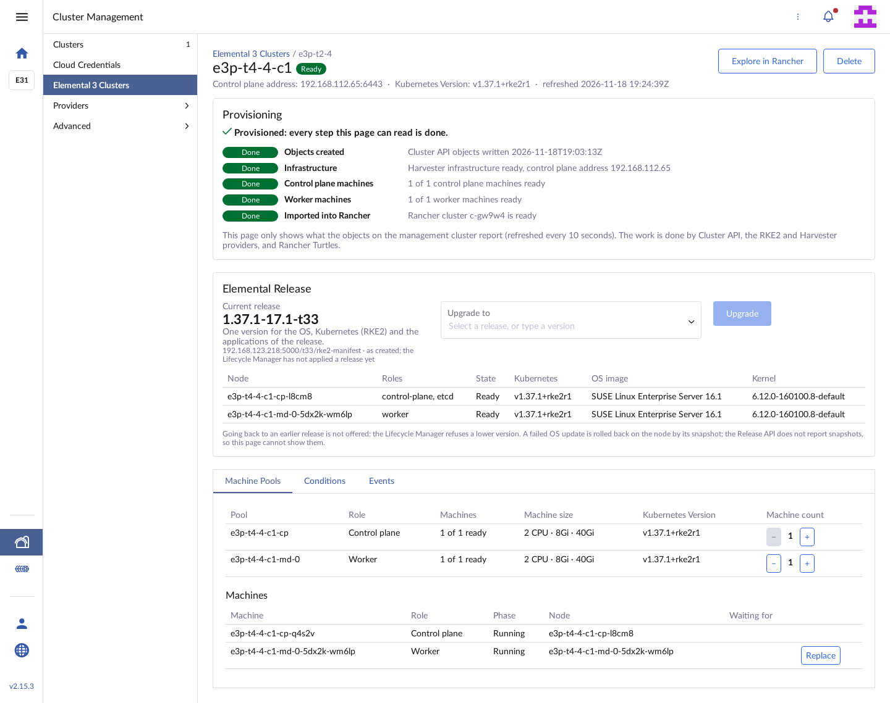
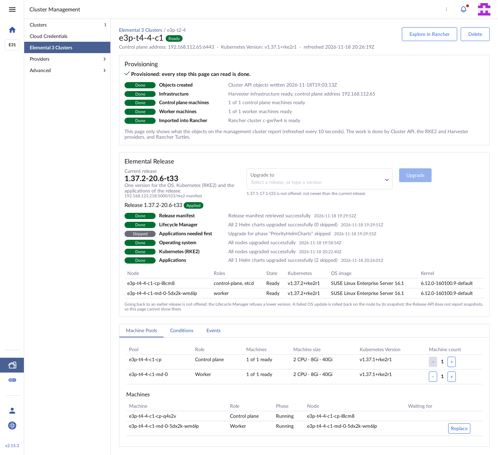

Elemental 3 Parity: Status
As of Nov 19, 2026 05:28 UTC. Started Nov 12, 2026. Work is done by software agents; every result is checked against its evidence before it is recorded.
What "parity" means here
Parity means a Rancher user can deploy, manage and upgrade an Elemental 3 cluster with an experience equal to or better than each solution it replaces. It is measured, not asserted.
- Baselines: Rancher provisioning v2, Elemental 2, SUSE Edge, and Harvester's own lifecycle. Each is measured in the same lab with the same harness.
- Unit of comparison: a user journey, for example "create a cluster" or "upgrade the OS and Kubernetes". There are 52 approved journeys across deploy, manage, upgrade, tenancy and migration.
- A journey passes when it completes, no node is left cordoned, and it takes no more user steps than the legacy path. Steps are the numbered actions in the official procedure. A tie counts as a pass.
- Time is checked but is not the deciding measure: up to 110% of the legacy time for the same cluster shape passes. The one-time image build for a first cluster is not counted; a prebuilt image path is.
- Elemental 3 must work with or without Rancher. No lifecycle function may depend on Rancher being present.
- Out of scope: K3s, bring-your-own OS, Windows workers, release downgrade, BIOS boot. ARM64 is in scope but not yet measured; every result so far is x86-64.
- Anything better than parity is recorded in a backlog and not built yet, so effort stays on closing gaps.
What it looks like
The Elemental 3 extension in the Rancher UI, used by a tenant account (not an administrator) on 2026-11-18. Unedited captures from the lab; click for full size.






Milestones: plan against actual
Targets are the estimates made before work began. Later milestones will be re-estimated from the measured pace.
| Wave | Goal | Target | Status | Notes |
|---|---|---|---|---|
| W0 | Scorecard live; legacy baselines measured; Harvester migration spike started | Nov 18, 2026 | Met Nov 13 (5 days ahead of target) | Scorecard and both legacy baselines measured by day 2. |
| W1 | Create, scale and upgrade an Elemental 3 cluster on Harvester through the API | Dec 2, 2026 | Shown in the lab Nov 17 (15 days ahead of target) | Measured end to end by the harness on a 3 + 2 cluster. Lab workarounds for the Harvester provider were used; fixes that remove them were proven on day 7. |
| W2 | Same flow in the Rancher UI with tenancy | Dec 23, 2026 | Under way | On day 7 a tenant created, scaled, upgraded and deleted a cluster entirely in the Rancher UI, with no administrator action and no workaround: create in 10 interactions (legacy 19), upgrade in 5 (legacy 6). The creator owns the imported cluster automatically. Cluster detail covers 3 of 12 manage journeys so far; the release catalog is still open. |
| W3 | Bare metal: registration, inventory, in-place upgrade | to be re-estimated | Not started | Not started. |
| W4 | AWS, Azure, GCP, vSphere; upgrade by replacement; air-gap; migration | to be re-estimated | Under way | Upgrade by replacement shown on Harvester (day 6). Other targets not started. |
| W5 | Harvester itself on Elemental 3, with in-place migration | to be re-estimated | Under way | Three-node rolling migration prototype with live guest and rollback ran on day 2. |
Activity by task
All 52 plan tasks and their status, including those not started.
Measured so far
Same cluster shape (3 control plane + 2 workers, 2 vCPU), same harness, x86-64, lab conditions. Single samples unless stated. Elemental 3 figures are from days 7 and 8 on the project's own builds, with no workarounds, run by a tenant.
| Journey | Rancher provisioning v2 | Elemental 2 | Elemental 3 |
|---|---|---|---|
| Create a cluster: user steps | 18 | 8 | 5 |
| Create a cluster: time | 25 min 30 s | 42 min 15 s | 20 min 43 s, median of 3 (19% faster than provisioning v2) |
| Scale workers 2 to 3 to 2: time | 16 min 40 s | 32 min 45 s | 9 min 58 s |
| Create in the Rancher UI: interactions | 19 | not measured | 10 |
| Upgrade in the Rancher UI: interactions | 6 (Kubernetes only) | not measured | 5 (OS, Kubernetes and applications) |
| Upgrade Kubernetes only | 24 min 29 s | 36 min 45 s | part of the combined upgrade |
| Upgrade OS and Kubernetes as one action | not offered | fails (node left cordoned) | 80 min in place; 55 min by replacement |
| Works with no Rancher at all | no | no | yes: create, scale, upgrade, delete |
Known gaps
- Cluster creation used to need four lab workarounds for the Harvester Cluster API provider. Since day 7 the lab runs the project's own fixed provider build, installed through Rancher Turtles, and a tenant created a 1 + 1 cluster with none of the four (18 min 05 s). The fixes are not yet in a released provider version.
- Releases: the lab now uses one release assembled from the project's own branches. With it, a 1 + 2 cluster upgraded OS, Kubernetes and applications with node drain on Kubernetes 1.37 in 35 min 23 s, with no Rancher involved and no manual step. On a 3 + 2 cluster under Rancher the same upgrade took 79 min 48 s with every node drained. Not yet proven: Kubernetes 1.38.
- With default Rancher roles a tenant cannot create or see an Elemental 3 cluster. The lab runs the project's own Rancher Turtles build, where the creator owns the cluster automatically; two extra roles are still needed, and the change is not in a released Turtles version.
- The in-place upgrade takes 80 minutes; the legacy Kubernetes-only upgrade takes 24. During it the cluster API missed 16 of 906 checks, the longest gap 22 seconds.
- Create time: on day 7 it was 29 min 49 s, 17% over provisioning v2 and outside the 10% limit, because the node image installed itself to disk on every first boot. On day 8 the project's own build of the Elemental tooling produced a pre-installed node image: 20 min 43 s (median of three, range 20 min 14 s to 21 min 17 s), inside the limit. An upgrade from that image passed on a 1 + 1 cluster. Not yet proven with it: a cluster without Rancher, and a 3 + 2 upgrade. The legacy figure is one run.
- Only Harvester virtual machines are covered so far. Bare metal, vSphere and the public clouds are not started.
- Everything is proven in a lab on fork branches. No upstream pull request has been opened yet, by decision.